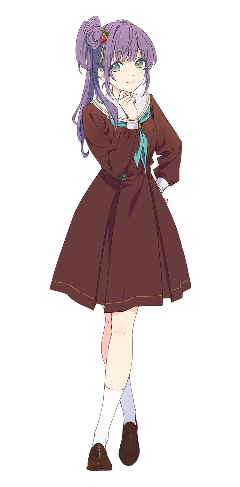

Hasunosora Girls' High School Idol Club (蓮ノ空女学院スクールアイドルクラブ) is the collective name of 6 virtual school idols from Hasunosora Girls' High School that are a part of a smart phone application which was launched on April 15, 2023.
Characters


Kaho Hoshita
Kaho Hinoshita is a main character in Link! Like! Love Live!. She is a first year student at Hasunosora Girls' High School. She is a member of Cerise Bouquet, a unit under the Hasunosora Girls' High School Idol Club. Her image color is sun yellow.
| Character | |
|---|---|
| Kanji | 日野下 花帆 |
| Romaji | Hinoshita Kaho |
| Voice Actress | |
| Kanji | 楡井 希実 |
| Romaji | Nirei Nozomi |
Kozue Otomune
Kozue Otomune is a main character in Link! Like! Love Live!. She is a second year student at Hasunosora Girls' High School. She is a member of Cerise Bouquet, a unit under the Hasunosora Girls' High School Idol Club. Her image color is mermaid green.
| Character | |
|---|---|
| Kanji | 乙宗 梢 |
| Romaji | Otomune Kozue |
| Voice Actress | |
| Kanji | 花宮 初奈 |
| Romaji | Hanamiya Nina |
Sayaka Murano
Sayaka Murano is a main character in Link! Like! Love Live!. She is a first year student at Hasunosora Girls' High School. She is a member of DOLLCHESTRA, a unit under the Hasunosora Girls' High School Idol Club. Her image color is ice blue.

| Character | |
|---|---|
| Kanji | 村野 さやか |
| Romaji | Sayaka Murano |
| Voice Actress | |
| Kanji | 野中 ここな |
| Romaji | Nonaka Kokona |
Tsuzuri Yugiri
Tsuzuri Yugiri is a main character in Link! Like! Love Live!. She is a second year student at Hasunosora Girls' High School. She is a member of DOLLCHESTRA, a unit under the Hasunosora Girls' High School Idol Club. Her image color is my red.

| Character | |
|---|---|
| Kanji | 夕霧 綴理 |
| Romaji | Yugiri Tsuzuri |
| Voice Actress | |
| Kanji | 佐々木 琴子 |
| Romaji | Sasaki Kotoko |
Rurino Osawa
Rurino Osawa is a main character in Link! Like! Love Live!. She is a first year student at Hasunosora Girls' High School. She is a member of Mira-Cra Park!, a unit under the Hasunosora Girls' High School Idol Club. Her image color is ruri pink.

| Character | |
|---|---|
| Kanji | 大沢 瑠璃乃 |
| Romaji | Osawa Rurino |
| Voice Actress | |
| Kanji | 菅 叶和 |
| Romaji | Kan Kanna |
Megumi Fujishima
Megumi Fujishima is a main character in Link! Like! Love Live!. She is a second year student at Hasunosora Girls' High School. She is a member of Mira-Cra Park!, a unit under the Hasunosora Girls' High School Idol Club. Her image color is angel white.

| Character | |
|---|---|
| Kanji | 藤島 慈 |
| Romaji | Fujishima Megumi |
| Voice Actress | |
| Kanji | 月音 こな |
| Romaji | Tsukine Kona |
Ginko Momose
Ginko Momose is a main character in Link! Like! Love Live!. She is currently a first year student at Hasunosora Girls' High School. She is a member of Cerise Bouquet, a unit under the Hasunosora Girls' High School Idol Club.
| Character | |
|---|---|
| Kanji | 百生 吟子 |
| Romaji | Momose Ginko |
| Voice Actress | |
| Kanji | 櫻井陽菜 |
| Romaji | Sakurai Hina |
Kosuzu Kachimachi
Kosuzu Kachimachi is a main character in Link! Like! Love Live!. She is currently a first year student at Hasunosora Girls' High School. She is a member of DOLLCHESTRA, a unit under the Hasunosora Girls' High School Idol Club.
| Character | |
|---|---|
| Kanji | 徒町 小鈴 |
| Romaji | Kachimachi Kosuzu |
| Voice Actress | |
| Kanji | 葉山風花 |
| Romaji | Hayama Fuka |
Hime Anyoji
Hime Anyoji is a main character in Link! Like! Love Live!. She is currently a first year student at Hasunosora Girls' High School. She is a member of Mira-Cra Park!, a unit under the Hasunosora Girls' High School Idol Club.
| Character | |
|---|---|
| Kanji | 安養寺 姫芽 |
| Romaji | Anyoji Hime |
| Voice Actress | |
| Kanji | 来栖りん |
| Romaji | Rin Kurusu |
Subunit
Cerise Bouquet
Cerise Bouquet is a unit under Hasunosora Girls' High School Idol Club. The unit consists of two members, namely Kaho Hinoshita and Kozue Otomune. They debuted with the song Suisai Sekai. Their unit color is rosé.
Dollchestra
DOLLCHESTRA is a unit under Hasunosora Girls' High School Idol Club. The unit consists of three members, namely Sayaka Murano, Tsuzuri Yugiri and Kosuzu Kachimachi. They debuted with the song AWOKE. Their unit color is blue.
Mira-Cra Park!
Mira-Cra Park! is a unit under Hasunosora Girls' High School Idol Club. The unit consists of three members, namely Rurino Osawa, Megumi Fujishima and Hime Anyoji. They debuted with the song Do! Do! Do!. Their unit color is yellow.